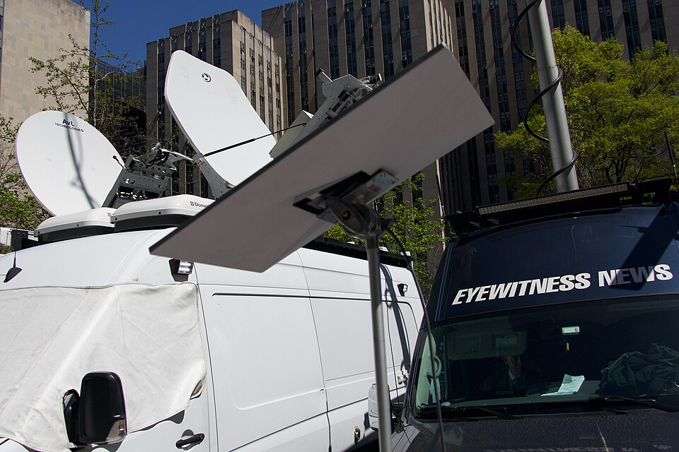
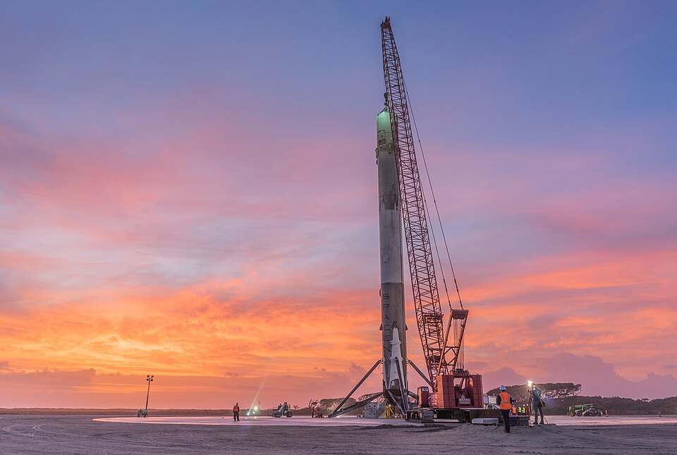
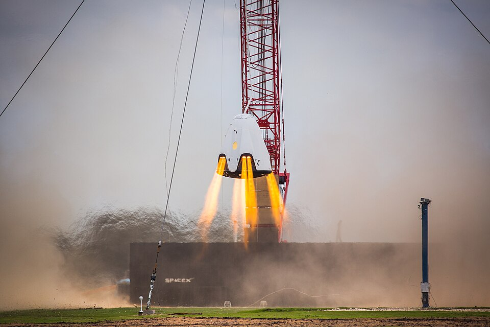

설립연도
2002년

로켓을 쏘아 올리고 다시 착륙시켜 재사용하는 기술로 우주 발사 비용을 크게 낮춘 회사예요. 수천 개의 위성으로 전 세계에 인터넷을 제공하는 스타링크가 가장 큰 사업이에요. 2026년 2월 일론 머스크의 AI 회사 xAI(소셜미디어 X 포함)와 합쳐졌고, 같은 해 6월 상장했어요.
칸에 마우스를 올리거나 누르면 자세한 설명을 볼 수 있어요.

수천 개의 저궤도 위성으로 인터넷이 닿지 않는 곳까지 인터넷을 제공해요. 가정, 선박, 비행기, 군대 등에서 쓰고, 스페이스X 매출에서 가장 큰 부분이에요.
대표 예스타링크 가정용·기업용, 위성-휴대폰 직접 연결

발사한 로켓을 다시 착륙시켜 재사용하는 방식으로 발사 비용을 크게 낮췄어요. 세계 위성 발사의 대부분을 맡고 있어요.
대표 예팰컨 9, 팰컨 헤비, 스타십
2026년 합병한 xAI의 AI 모델 그록과 소셜미디어 X를 운영해요. 대규모 AI 데이터센터를 짓고 있어요.
대표 예그록, X(옛 트위터)

NASA의 우주정거장 화물·우주인 수송을 맡고, 달·화성에 갈 초대형 우주선 스타십을 개발 중이에요.
대표 예드래곤 우주선, 스타십
원화 금액은 1달러 = 1,348.8원(2026년 11월 23일 유럽중앙은행 기준환율)으로 환산한 대략적인 값이에요.
| 기간 | 매출 | 영업이익 | 순이익 |
|---|
사업마다 겨루는 상대가 달라요